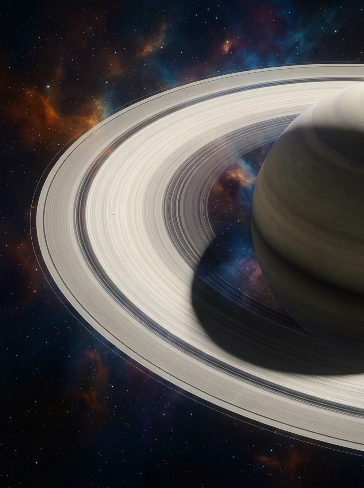
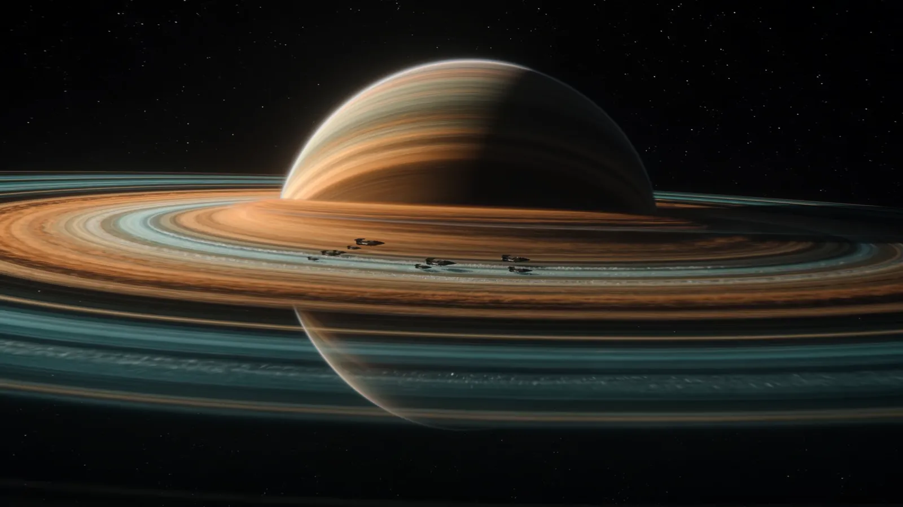
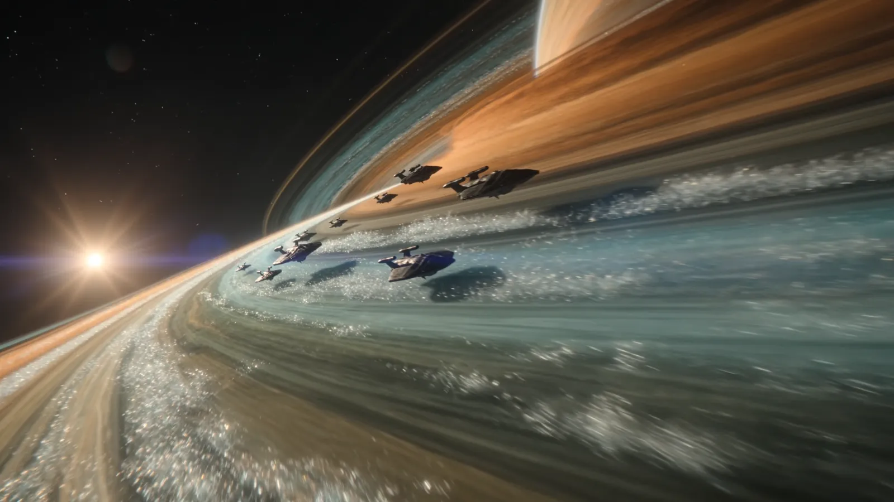
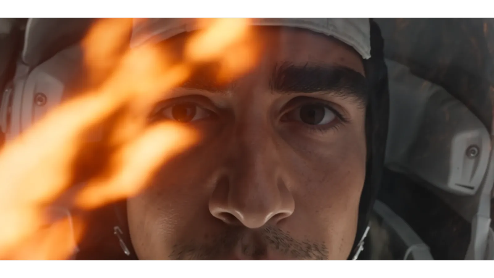
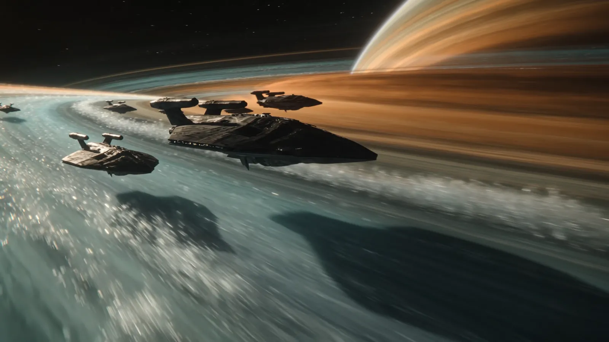
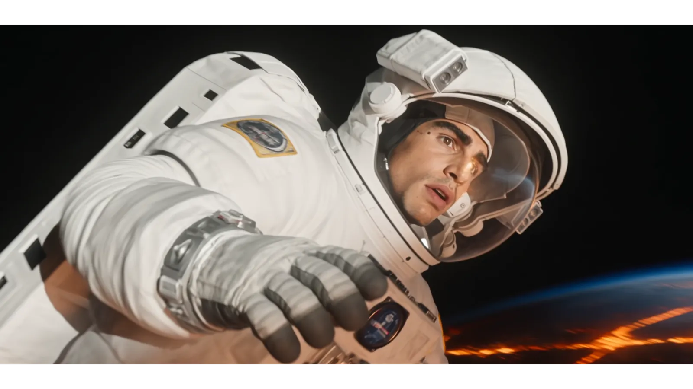
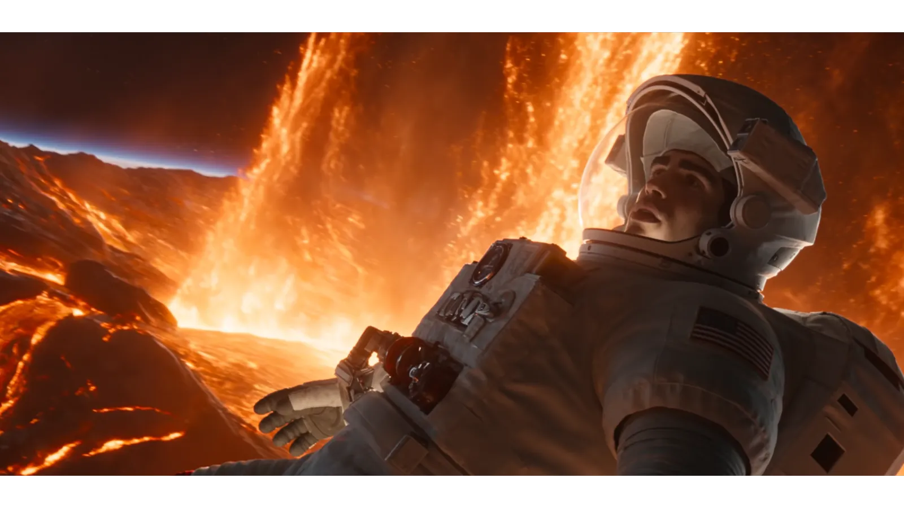

Ion Lattice Drive
A field-shaped ion lattice turns the ring's own charged dust into reaction mass. The convoy refuels by flying.
SpecificationA JOURNEY IN SIX SCENES
Scroll to begin the crossing
SCENE 01 — VELOCITY
SCENE 01 — THE RINGS
SCENE 01 — ARRIVAL
CHAPTER ONE
01 — INTRODUCTION
SPACE Z is a deep-system transit program: freight convoys and crewed clippers riding the ring-plane of a gas giant nine light-hours from home. This is the record of the first crossing — captured frame by frame, scored by your scroll.
Six scenes. Two vessels. One species that refused to stay still. Everything you are about to see is in motion because you are.
02 — RESEARCH
Before a single hull was laid, survey probes flew nine hundred orbits through the ring-plane, mapping shear currents in the ice and dust so a convoy could one day surf them.

03 — TECHNOLOGY
A field-shaped ion lattice turns the ring's own charged dust into reaction mass. The convoy refuels by flying.
SpecificationMicro-actuated plating re-tessellates mid-flight, shrugging off ice at eleven kilometres per second.
SpecificationNavigation that holds one-metre certainty across nine light-hours — no beacon, no ground station, no doubt.
SpecificationAir, water and food cycle through a living garden core. The crew doesn't carry supplies; they carry a world.
Specification
The giant itself — rings spanning a quarter-million kilometres. Every technology above exists for this view.
04 — MISSION HELIOS
EVA — HOUR SIX
PERIHELION PASS
CREW LOG — FINAL ENTRY
05 — PORTFOLIO
Every image below is an unretouched still from the crossing — hover to lean into the frame.





MISSION LOG
Convoy Nine slips Earth orbit under ion lattice power. Nine ships, forty crew.
First vessel enters the shear corridor. The rings take the convoy like a river takes a leaf.
Cmdr. Vale's EVA over the burning moon. Eleven minutes at perihelion. All suits nominal.
Full view of the giant. The crossing is complete; the frontier is open.
Survey teams chart the return corridor. Convoy Ten is already being built.
06 — FUTURE
Convoy Ten departs in eighteen months. Engineers, pilots, botanists, storytellers — the frontier hires every trade.
Begin Again